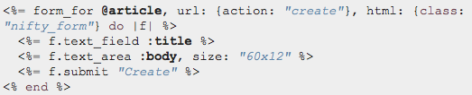
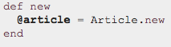

Background:
So this post is way overdue, but I'll put it out anyways. Form helpers are helper methods that allow you to quickly generate forms. Let's take a look at what RailsGuides has to say.
In the example above, we are creating the form_for helper within the corresponding article#new view.
@article is first defined in the new action as shown below.
The url: hash in the first image are routing options. In our example we define which corresponding controller#action we will be posting @article to.
The html: hash is for html options. Take a look at how this helper method is translated to semantic html below.
 RailsGuides:Form Helpers
RailsGuides:Form Helpers